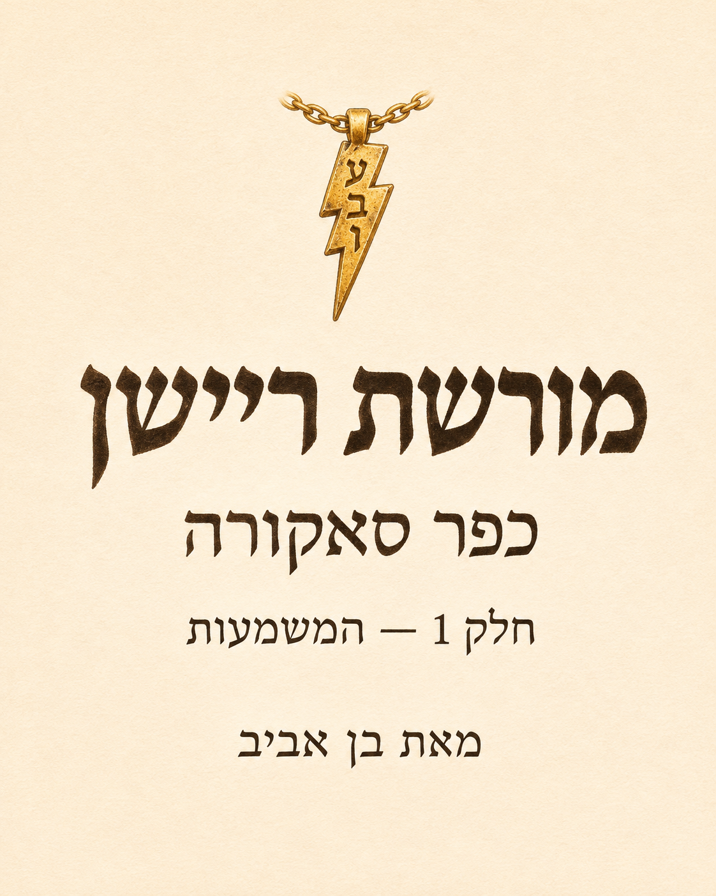

כריכת הספר

שער פנימי

גב הכריכה

בין ההרים שבצפון שוכן כפר סאקורה השקט. שם, בין עצי הדובדבן, גדלה לה ראיקה, ארנבת צעירה שצועדת בדרכי אבות אבותיה ומקדישה את חייה להיות הלוחמת הכי חזקה שתוכל.
יום אחרי יום מחכים לה אימונים קשים. היא מתרגלת אמנויות לחימה, לומדת לשלוט בכלי נשק ומחזקת את גופה. אפילו לשבת בשקט ולהתרכז בנשימה זה חלק מהאימון. אביה מכין אותה לכל אתגר שיעמוד בפניה.
ראיקה עוד מנסה להבין למה דורשים ממנה כל כך הרבה ומה מקומה בכל זה. ויש רגעים שבהם היא רק רוצה להיות ילדה.
הצטרפו למסע של ראיקה וגלו מה צריך כדי להיות לוחמת.
מהי מורשת ריישן?
כל עמוד נוסף יופיע כאן רק אחרי אישור מפורש. לא יוחלפו תמונות מאושרות ולא ייווצרו גרסאות חדשות ללא בקשה.